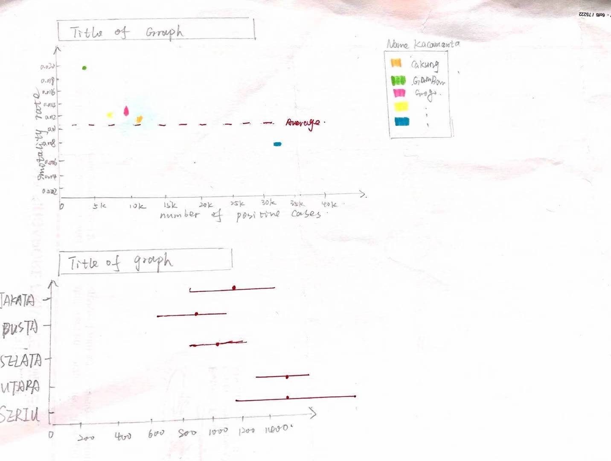
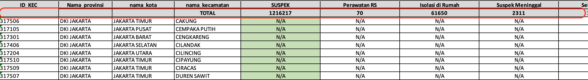
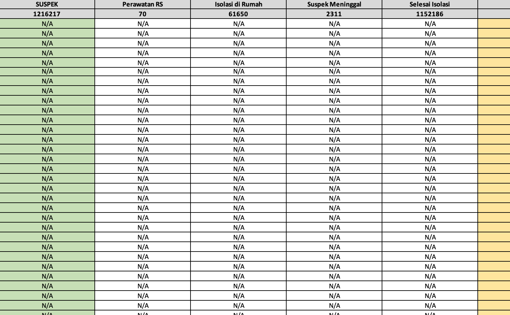
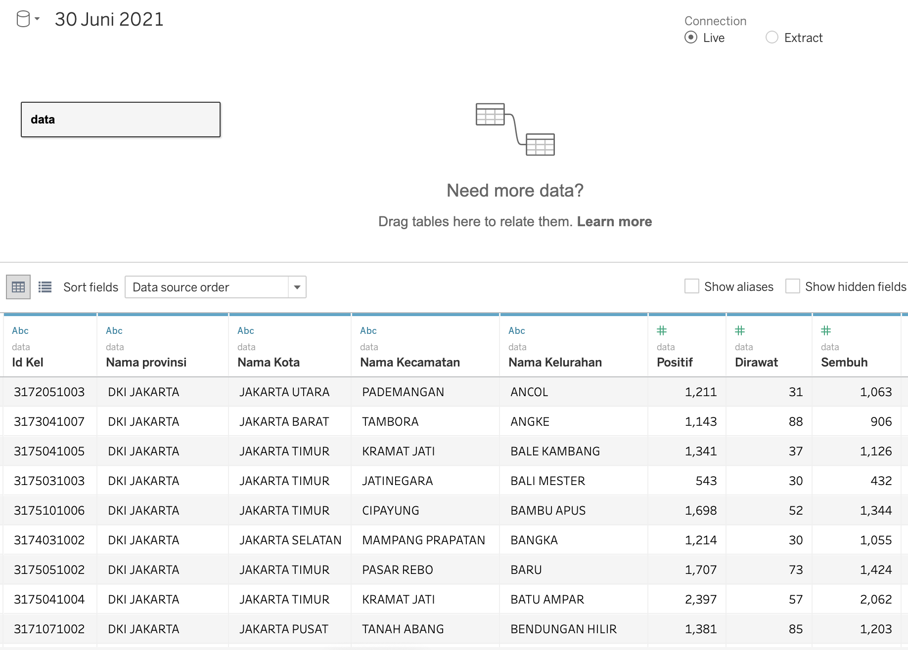
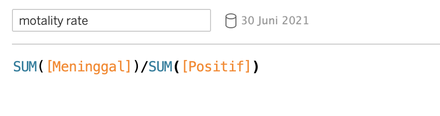
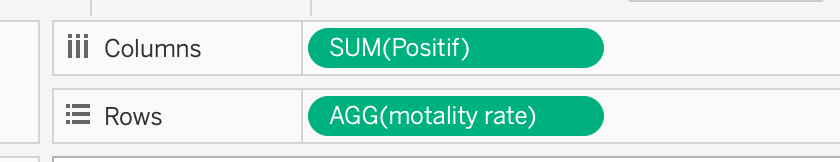
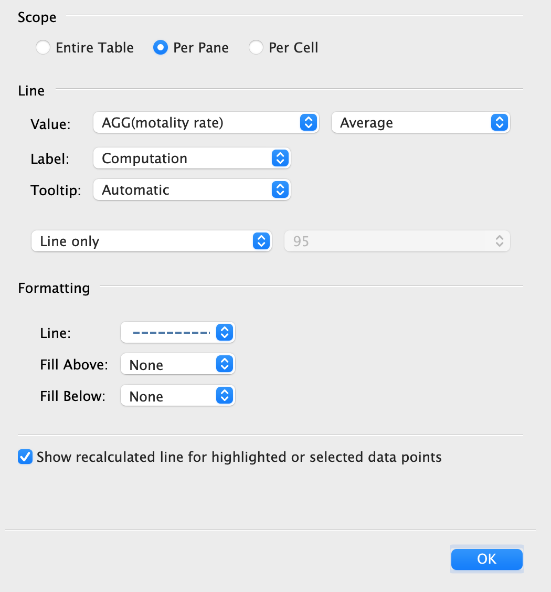
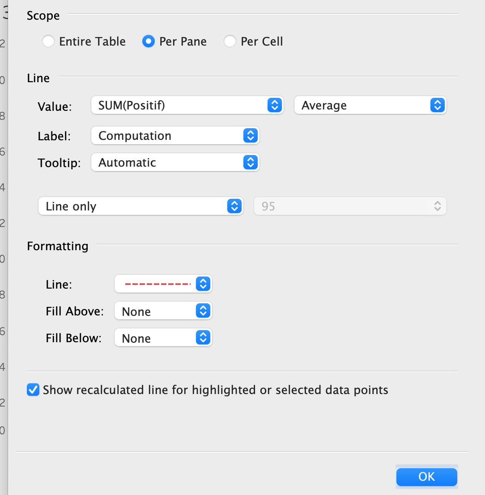
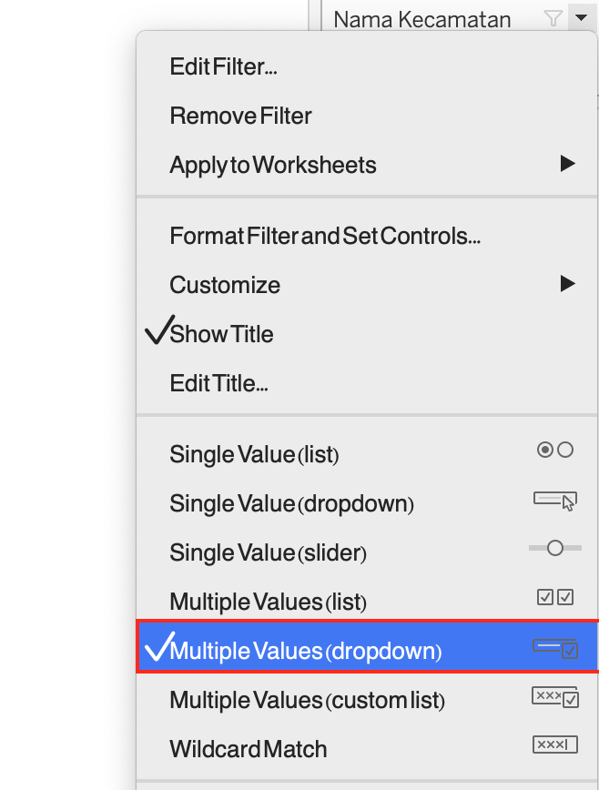

DataViz Makeover - 3
The DataViz Makeover-3 report aims to optimize the original graph by using the data from Open Data Covid-19 Provinsi DKI Jakarta.
1. The original data


2. Clarity
In this section, the original data will implemented makeover based on clarity dimension.
| Index | Critiques | Improvement |
|---|---|---|
| 1 | The scatter plot displays all figures of districts, but the title just says it shows top-5 districts which is inappropriate. | Just add a sub-title to explain that the graph also mark top-5 districts. |
| 2 | Kota means city in English, so it should not be a sub-strict in the title | Modify the sub-district to city. |
| 3 | The label of y-axis in the scatter graph is too tighten to tell which point corresponding to which label | Add the reference line in the pane to help people refer to. |
| 4 | The title of scatter graph describe it as accumulative number, whereas the x-axis just shows the number of death which is in consistent. | Change the x-axis label as ‘accumulative number of deaths’. |
3. Aesthentics
In this section, the original data will implement makeover based on Aesthetics dimension.
| Index | Critiques | Improvement |
|---|---|---|
| 1 | The marks in the pane overlapped the points in the graph. | Size down the marks in the pane. |
| 2 | The label of Y-axis in each graph seems a bit redundant. | Remove the label of Y-axis. |
| 3 | There is no any reference to see whether the condistion of each district is bad or relative fine. | Add some reference lines in the pane to differentiate the condition. |
4. Porposed Design

4.1 The advantages of sketch
- Add the relationship between the mortality rate and positive case, which would be clear to evaluate the condition.
- Include the uncertainty in the second graph, which is clearer than before to compare the variance.
- Add the filter to select the districts, it would be helpful when people want to compare the similar districts.
5. Detail steps of visualization
5.1 Data preprocessing in excel
There is a row which might be the sub-title of excel, I excluded it in the excel since there is no need to keep it. 
Plus, there are several columns without value and we only focus on the positive case and mortality case, in this case I just removed them. 
5.2 Data preparation in Tableau
- Import the processed data into Tableau, rename the data as ‘30 Juni 2021’. The data would be shown like the picture below:

scatter plot makeover
- Create a new fields
Created a new field, name it as ‘mortality rate’ and the formula is shown as below:

- plot the graph
Drag and drop ‘positif’ into column, drag and drop ‘mortality rate’ into row. 
Put ‘name kecamanta’ into color in the pane and also put it into the filter.

- Add reference lines
Insert 2 reference lines in the pane, the first one is the average mortality rate. Set it as dot line and the color is in blue.  The second one is the average number of positive case. Set it as dot line as well, but the color of line is in red. 
- Show filter
Right click on the filter and click on show filter, the filter display mode is set to be ‘multiple value drop down’. 
Bar chart make over
5.3 Bubble plot visualization
Once two tables are done with the steps above, import them into tableau.
- Data blending
Blend 2 data source by linking Data relationship and country relationship between two tables.

A sign will appear next to the linked column in primary data.

- Calculate the real number of import/ export value
Since different value has different unit, so I created the real value by creating a new field, the formula is shown as below..

Then I created another new field to calculate the final value of import. Repeat the same step to get the final value of export.

- Drag ‘sum(export value-final)’ into column, change the table calculation as percentile.Change the compute using as ‘country’.Drag ‘sum(export value-final) to row, repeate the same step to modify it.

- Drag ‘country’ to detail, drag sum(export value- final) to size, drag sum(import value-final) to color.

In this step, we can see that color represents the import value, meaning that the darker the circle is, the larger the import value is. And size represents export value, meaning that the larger the circle is, the larger the export value is.
- Apply filter
Drag either one of country in two data sources into the filter (since two country columns are linked). Show the filter and select the area that I want to see, the default countries I check is top-10 Import value of the countries.

Right click show filter on the right so that I can filter the area in the future. Drag the date field into the filter as well, since sometimes I just want to look at particular period of time instead of all time period.The default year I select is from 2011 to 2020.
- Add diagonal reference line
Create a new calculation field named reference line, the content of field is equal to export value, shown as below.

Drag the reference line to row, set the computing use as country and set quick table calculation as percentile, same as the export value field. Then minimize the size of line, the graph shown like the picture below.
 Right click the reference line in the row, select dual axis in the menu. Two field will be put together.
Right click the reference line in the row, select dual axis in the menu. Two field will be put together.
 Right click the reference line on the right y-axis, select synchronize Axis, then 2 y-axises will be consistent. Last step is to remove header on the right y-axis to keep on y-axis.
Right click the reference line on the right y-axis, select synchronize Axis, then 2 y-axises will be consistent. Last step is to remove header on the right y-axis to keep on y-axis.
 Add the annotation on the right of diagonal line, the content of annotation is ‘Trade surplus’ and add another annotation on the left of line, the content of annotation is ‘Trade deficit’.
Add the annotation on the right of diagonal line, the content of annotation is ‘Trade surplus’ and add another annotation on the left of line, the content of annotation is ‘Trade deficit’.
- Edit tooltip
Create a new calculation field named ranking by import, the formula is shown as below.

Create the similar calculation for export value data source, name it as ranking by export. Open tooltip and edit the content of it, like the picture below.
 Modify the format of import value and export value with billion unit and ‘$’.
Modify the format of import value and export value with billion unit and ‘$’.

The content of tooltip in sheet will be shown as the picture below.

- Add animation
Drag the month(date) to page area so that I can see the changes of graph over time.
 Check the ‘show history’ box and set the speed as normal.
Check the ‘show history’ box and set the speed as normal.

- Rename titles and axis.
Title was changed as ‘Merchandise Trade Performance-

Y-axis title was changed as ‘Percentile of Import Value’.
X-axis title was changed as ‘Percentile of Export Value’.
5.4 Bar chart visualisation
The bar chart aims to compare the import value and export value in particular country/area.
-
Drag sum(import value_final) and sum(export value_final) to column and drag country to row.
-
Right click the x-axis of import value, check reverse box.

-
Drag import value and export value to color respectively.

-
Add balance field
create a new calculation field named balance, the formula is shown as below.

created the other new field named balance-color, the formula is shown as below.

Drag balance to column and drag balance-color to color area.
- Add filter
Drag either one of country in two data sources into the filter (since two country columns are linked). Show the filter and select the area that I want to see, the default countries I check is top-10 Import value of the countries.

- Add animation
Drag the month(date) to page area so that I can see the changes of graph over time.
5.5 Time series of balance
- Drag balance to rows and drag month(date) to column, change the format of balance like the picture below.

- Add animation and filter
Drag year(date) to filter, set the time period is from 2011 to 2020, consistent with other sheets. Drag month(date) to page so that the animation control in dashboard can be applied to the chart.

5.6 Dashboard visualization
- Apply country filter to all sheets
Right click country filter, click on apply to worksheet, select all using this data source.

-
Drag bar chart and bubble plot into the dashboard, modify the layout of them.
-
Add source
Using Object > Text > drag text to the bottom, then add the source and the raw data link.
The final dashboard would be shown like the picture below.

6. Insights from new graph
- Europe:
Europe has always been the top ranking importer over past 10 years. And the import value was always larger than export value.

In 2016 May, the export increased significantly even equal to import value,and 2 values are ranking 1 at the same time. The next few months of 2016, the gap between import value and export value remain small. After 2016, the gap returned to a relative large degree as normal.

- Mainland China: Mainland China was always ranking as 2 from 2013 onward, sometimes even became first ranking after 2020 as for the import value.

The export value of Mainland China was always a bit larger than export value alla the time except for 2019 October, November and 2013 March.

- Indonesia: Indonesia used to be a powerful exporter, however, after 2014, the export value stared to go down to the lower lever and remain fluctuating, since 2020 March, the export value even went down sharply until 2021.


- Malaysia: The import value of Malaysia used to be the top ranking until 2014, Mainland China caught up and exceed Malaysia. But the balance between import value and export value remain unchanged – more or less than 1 billion.